虎尾小劇場｜三年級資源班
1
看臉、看動作，猜猜他的心情。
2
看一看、猜一猜、問一問、幫一幫。
虎尾小劇場｜家人的心情，我看得懂
想一想
臉看起來怎樣？
會做什麼動作？
你會怎麼做？
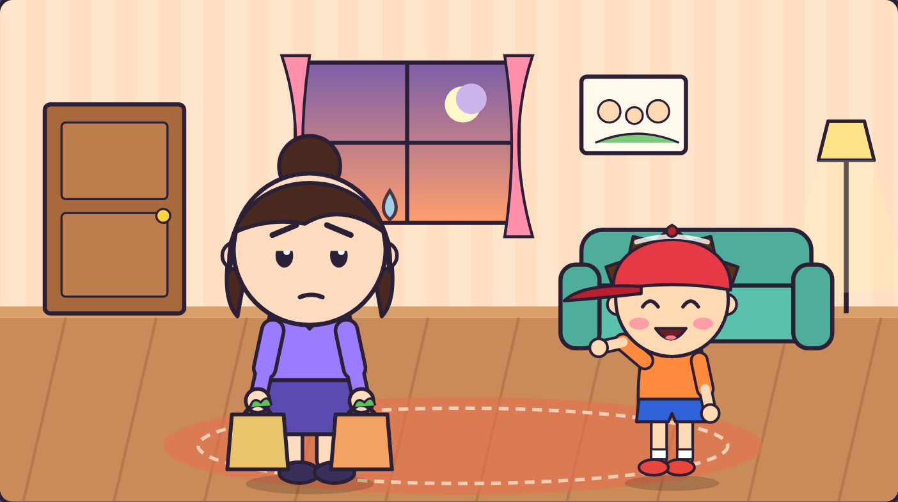
虎尾小劇場｜家人的心情，我看得懂
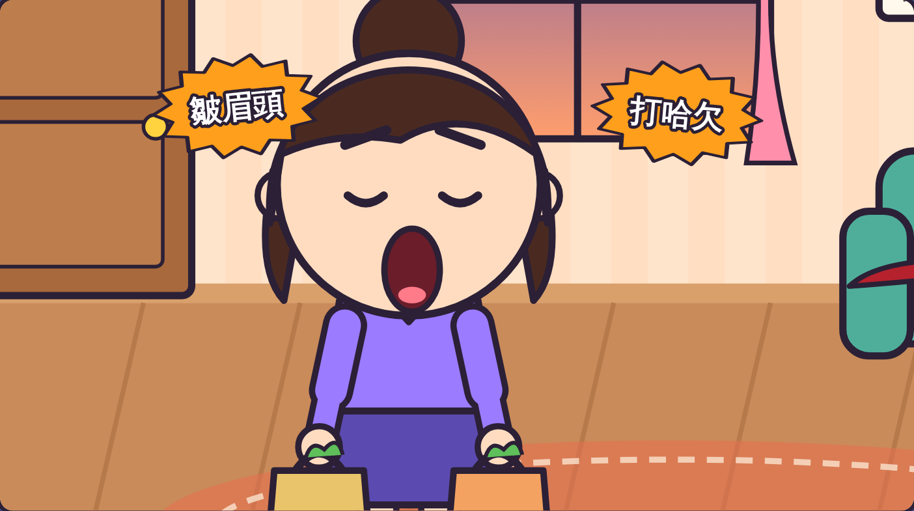
皺著眉頭
打一個大哈欠
嘆了一口氣
媽媽可能累了。
虎尾小劇場｜家人的心情，我看得懂
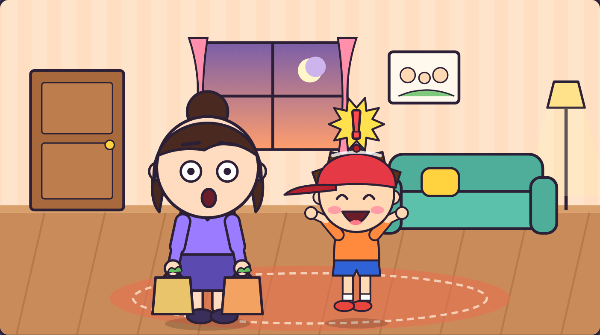
阿樂大喊：
「現在就要玩！」
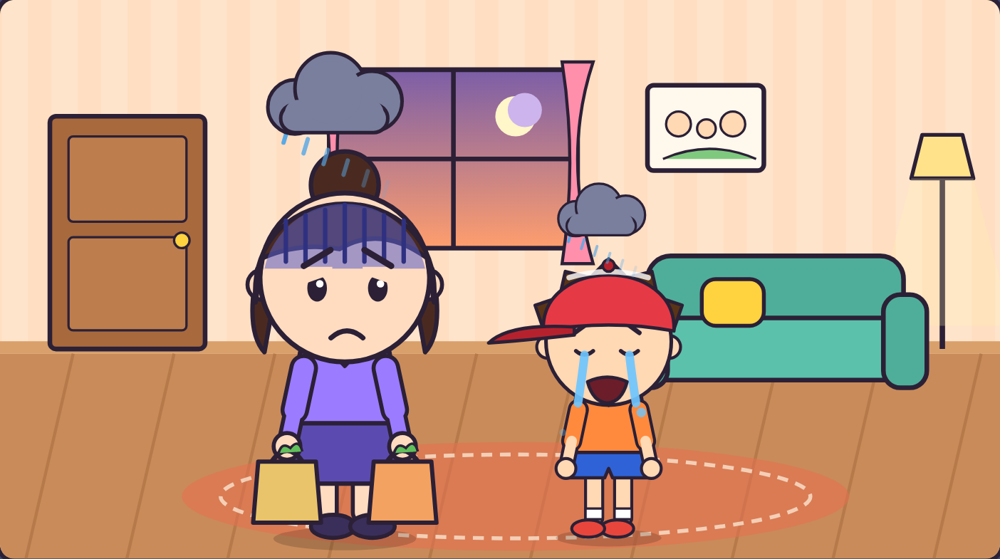
媽媽更累了，
阿樂也好委屈。
虎尾小劇場｜家人的心情，我看得懂
1
看臉和動作
2
猜猜什麼心情
3
溫柔地問
4
做一件小事
第 1 步
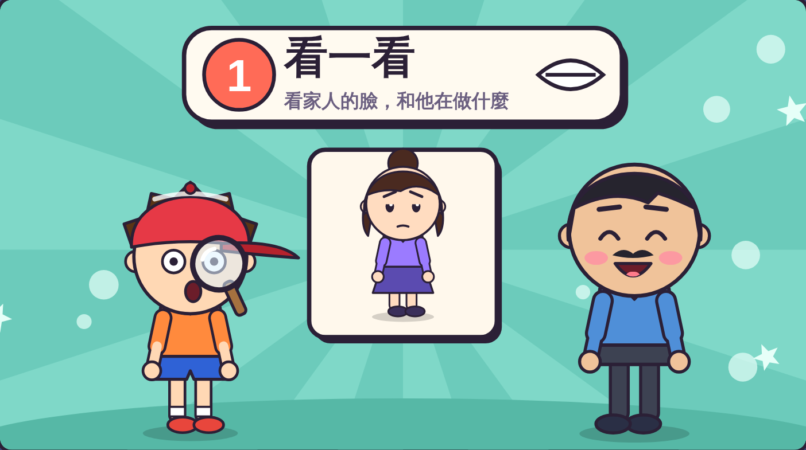
看家人的臉，
看他在做什麼。
臉：皺眉、嘆氣
動作：提很多東西
當一次小偵探！
虎尾小劇場｜家人的心情，我看得懂
第 2 步
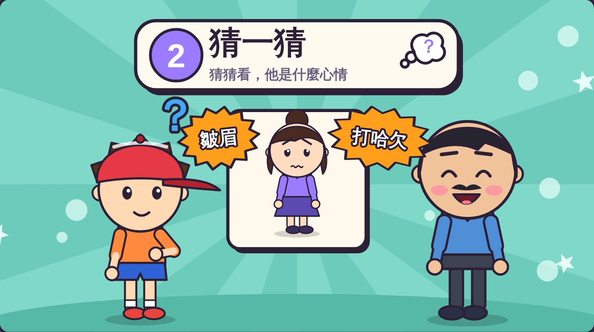
他可能是
什麼心情？
皺眉 + 打哈欠
→ 媽媽可能累了
換你猜猜看！
虎尾小劇場｜家人的心情，我看得懂
第 3 步
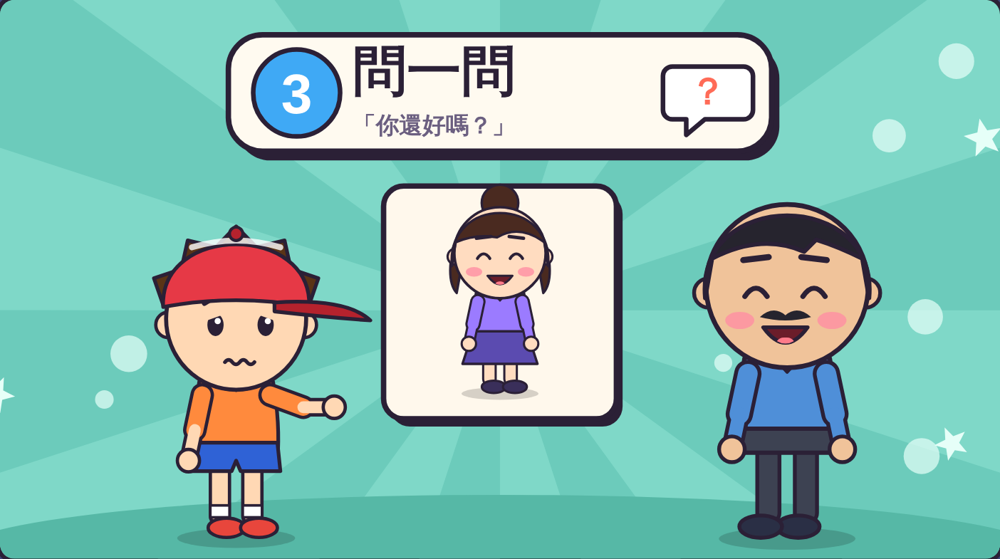
「媽媽，
你是不是很累？」
說話要溫柔、小聲。
練習問一問！
虎尾小劇場｜家人的心情，我看得懂
第 4 步
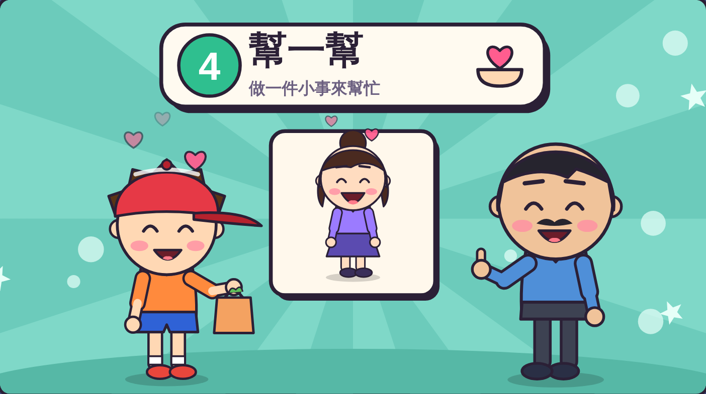
你會幫什麼忙？
虎尾小劇場｜家人的心情，我看得懂
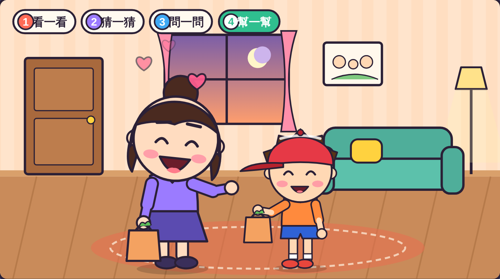
媽媽說：「謝謝你，
你真貼心。」
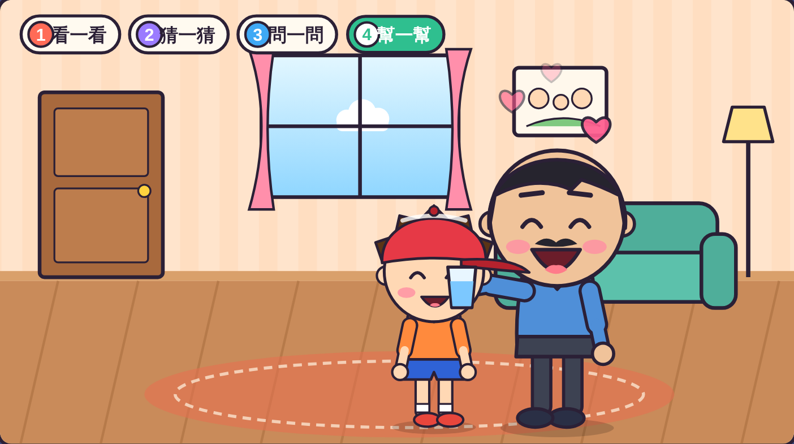
爸爸講電話時，
阿樂先小聲，再倒水。
虎尾小劇場｜家人的心情，我看得懂
老師抽一張情境卡，用心情小偵探四步驟演出來。
情境 1
情境 2
情境 3
虎尾小劇場｜家人的心情，我看得懂
一起念口訣
看一看，猜一猜，
問一問，幫一幫，
家人的心情，
我看得懂！
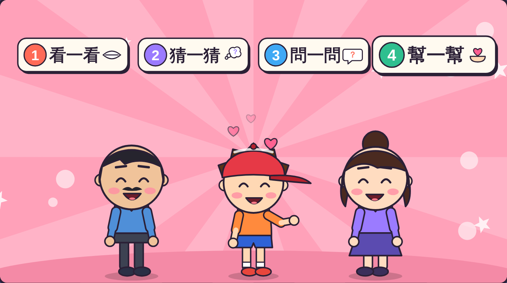
打開「心情小偵探挑戰題」，
回答 8 個問題。
8 題
虎尾小劇場｜家人的心情，我看得懂